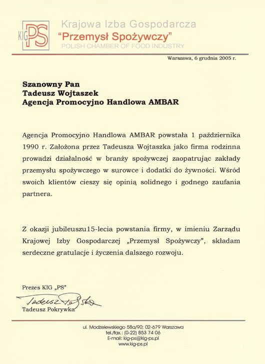

Pierwsze w Polsce czasopismo o napojach
AMBAR był jego wydawcą.
O nas
Agencja Promocyjno Handlowa AMBAR powstała 1 października 1990 roku jako firma rodzinna. Założycielem jest Tadeusz Wojtaszek, który wraz z synem Jarosławem rozpoczął wspólną działalność. 1 maja 1991 roku utworzono Firmę Handlowo Usługową ALDO, którą również prowadzą razem.
W obu firmach pracują najbliżsi członkowie rodziny: żona Tadeusza – Helena, córka Monika, wnuczka Monika Magdalena, żona Jarosława – Agnieszka, kuzyni i kuzynki oraz ich dzieci. Łącznie około 10 osób. Tylko dwie osoby pracują spoza rodziny – ale czują się jak w rodzinie.
Działamy w Brzeziu, skąd wywodzą się korzenie właścicieli. To Brzezie koło Krakowa – 2 km od granicy miasta i ok. 15 km od Rynku Głównego. Pierwsza pisana wzmianka o miejscowości pochodzi z 1260 roku.
Zdjęcia zespołu i siedziby: [do uzupełnienia]
Założyciel · AMBAR
Członek Honorowy Krajowej Izby Gospodarczej „Przemysł Spożywczy i Opakowań” oraz Polskiego Towarzystwa Magnezologicznego. Autor publikacji o wodzie, wodach mineralnych i dodatkach do żywności.
Współwłaściciel · AMBAR i ALDO
Członek Rady Nadzorczej Krajowej Izby Gospodarczej „Przemysł Spożywczy i Opakowań”. Autor ekspertyz wdrażania systemów jakości w branży winiarskiej i spirytusowej.
Historia
1 października powstaje Agencja Promocyjno Handlowa AMBAR – firma rodzinna założona przez Tadeusza Wojtaszka, który rozpoczął działalność wspólnie z synem Jarosławem.
1 maja powstaje Firma Handlowo Usługowa ALDO, prowadzona wspólnie przez obu właścicieli.
AMBAR wydaje pierwsze w Polsce czasopismo poświęcone napojom i organizuje seminaria we współpracy z Wydziałem Technologii Żywności Akademii Rolniczej w Krakowie.
V Krakowskie Spotkanie Producentów Napojów – medal pamiątkowy AMBAR-u wykonuje prof. Marian Konieczny.
Wprowadzamy napoje profilaktyczne dla pracowników i sportowców.
25. rocznica działalności firmy AMBAR.
36 lat na rynku – nadal rodzinnie, w Brzeziu koło Krakowa.
inaczej imbar – w dawnej Polsce: spichrz, skład.
Skąd nazwa
Nazwę wzięliśmy z Encyklopedii staropolskiej Zygmunta Glogera (1900–1903). Wyraz pochodzi z perskiego, gdzie oznaczał spichrz i skład okrętowy, i przez Turcję trafił do wielu języków europejskich. W Wilnie część ulicy Wielkiej nazywała się Imbary. Zapomniany w ubiegłym wieku – wrócił w nazwie naszej firmy, nawiązując do tradycji polskiego języka.
Branża i społeczność
AMBAR był jego wydawcą.
Organizowane we współpracy z Wydziałem Technologii Żywności Akademii Rolniczej w Krakowie – wykładali m.in. prof. Tadeusz Tuszyński, prof. Zofia Zachwieja i dr Teresa Latour.
Gośćmi byli m.in. Maciej Kuroń i prof. Marian Konieczny, autor medalu pamiątkowego AMBAR-u (1999).
Coroczna akcja w Krakowie łącząca promocję produktów z pomocą wybranym domom dziecka.
Członkostwa
Tadeusz Wojtaszek – Członek Honorowy Izby · Jarosław Wojtaszek – członek Rady Nadzorczej
Tadeusz Wojtaszek – Członek Honorowy Towarzystwa · ptmag.pl
Agro Przemysł · Aura · Bezpieczeństwo i Higiena Żywności · Przemysł Fermentacyjny i Owocowo-Warzywny · Przemysł Spożywczy · Przegląd Piekarski i Cukierniczy · Zdrowa Żywność i Zdrowy Styl Życia
